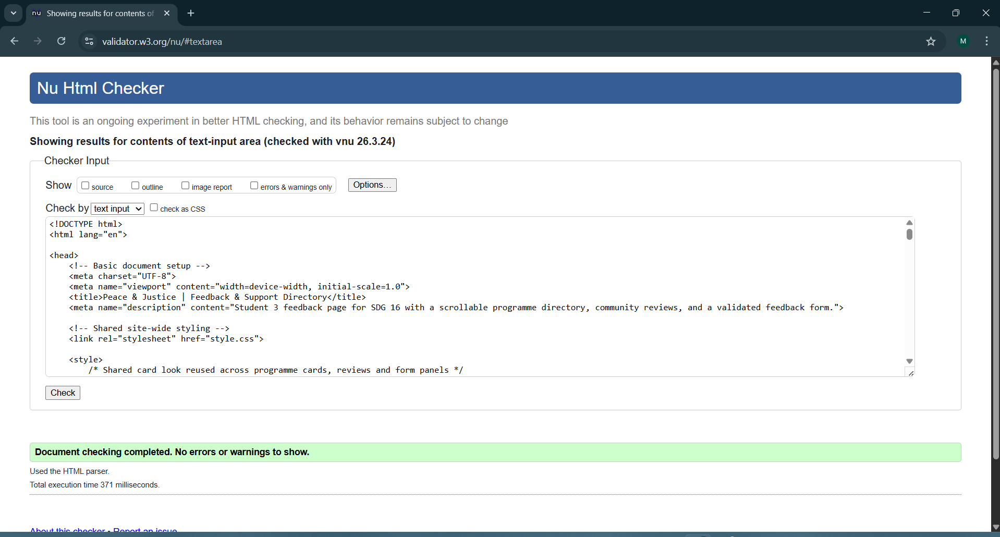
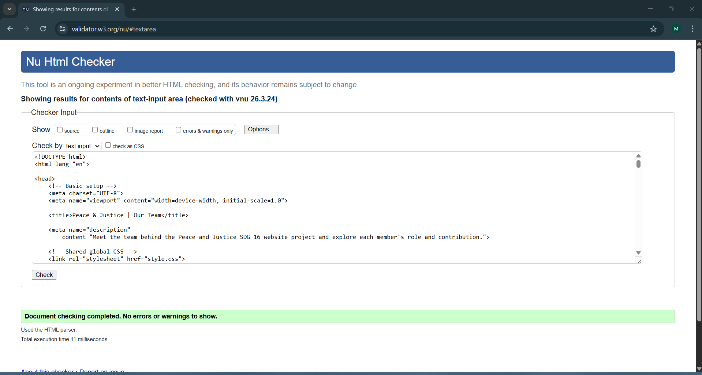
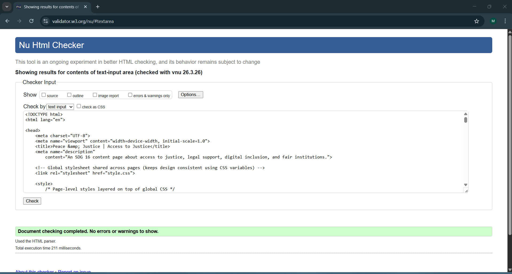

Feedback Page Validation Report
The screenshot below shows the W3C validation result for the Feedback page. It confirms that the page passed validation successfully with no errors.

While validating this page, I reviewed the form structure and corrected small HTML issues. This helped me see how validation improves both code quality and page reliability.
Back to Page Editor
Team Page Validation Report
The screenshot below shows the W3C validation result for the Team page. It confirms that the page also passed validation with no errors.

This validation process helped me check that the page structure was clear and correctly organised. I learned that even small markup mistakes can affect overall code quality.
Back to Page Editor
Content Page Validation Report
The screenshot below shows the W3C validation result for the Content page. It confirms that the page passed validation successfully with no errors.

Validating this page helped me confirm that the content was marked up properly using valid HTML. It showed me the value of checking code carefully before final submission.
Back to Page Editor
Reflection on Validation Process
Validating my pages was an important final step because it helped me identify and correct small HTML issues that could easily be missed during development. By checking each page carefully, I was able to improve the accuracy of my code and make sure it followed web standards.
This process also showed me that validation is not only useful for removing errors, but also for improving structure, consistency and overall code quality. It helped me become more careful with element nesting, attributes and page organisation.